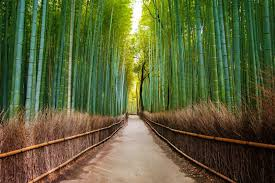

Kyoto Bamboo Forest, Japan
Location: Arashiyama, Kyoto, Japan
The bamboo groves of Arashiyama in Kyoto create one of the most surreal soundscapes in nature. As wind moves through the thousands of towering stalks, it produces a deep, resonant creaking that Japan's Ministry of the Environment has officially designated as one of the country's '100 Soundscapes to Preserve.' Some bamboo species here can grow nearly a meter in a single day, making it one of the fastest-growing plants on the planet, and the forest has been a sacred, protected site for centuries.
Type: Forest / Natural Walkway